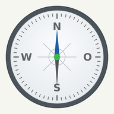
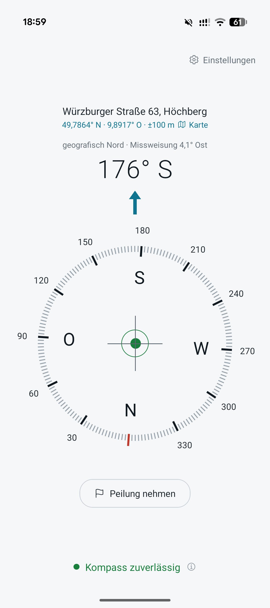
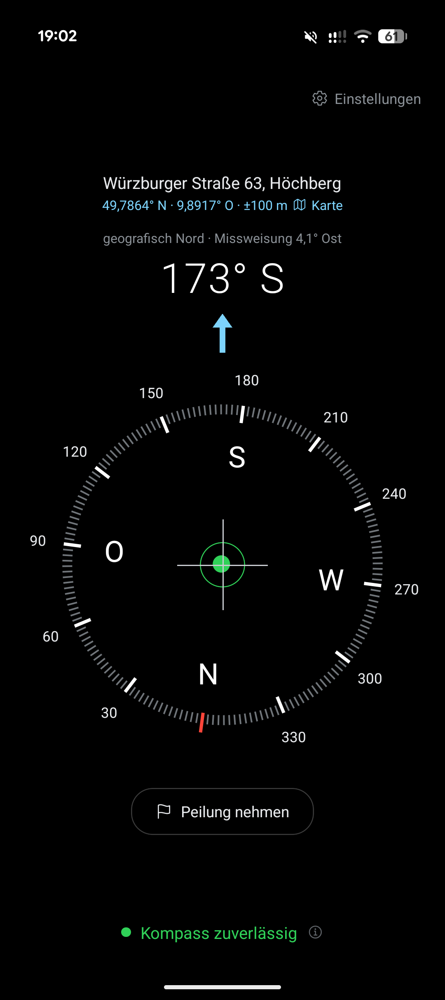
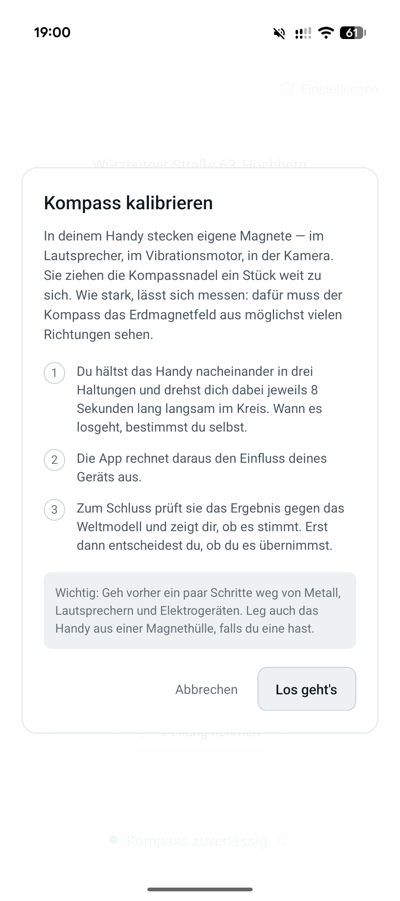
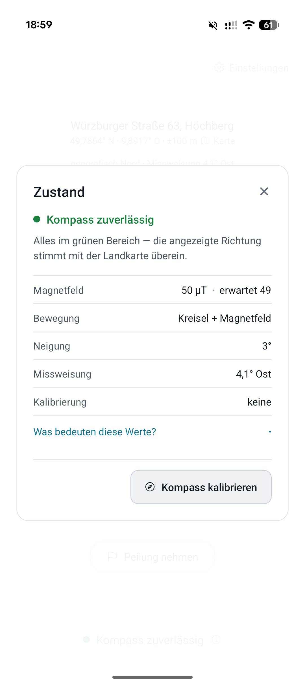

Kompass
Ein ehrlicher Kompass für Android.
- Kostenlos
- Werbefrei
- Offline
Ich suche zwölf Testpersonen
Ich habe diese App selbst entwickelt. Bevor Google sie im Play Store veröffentlicht, verlangt sie einen zweiwöchigen Test mit mindestens zwölf Personen.
Dein Aufwand: zwei Klicks und dann nichts mehr. Du installierst die App und lässt sie 14 Tage auf dem Handy. Benutzen musst du sie nicht.
So sieht sie aus




seitlich wischen
Was sie besser macht
-
Sie sagt, wie verlässlich sie ist
Ob das Magnetfeld gestört ist oder du das Telefon schief hältst – in ganzen Sätzen statt in Messwerten.
-
Sie stimmt auch schräg
Der Kurs wird über die Lage des Geräts ausgeglichen. Eine Libelle zeigt dir, wie gerade du hältst.
-
Echter statt magnetischer Norden
Die örtliche Abweichung wird aus dem Standort berechnet – offline, mit dem Weltmagnetmodell 2025.
-
Peilung nehmen
Richtung merken, und die App führt dich zurück: „34° nach rechts“.
So machst du mit
-
Der Testgruppe beitreten
Ein Klick auf den ersten Knopf, dann auf „Gruppe beitreten“.
-
Dem Test zustimmen
Zweiter Knopf, dort auf „Tester werden“. Erst danach zählst du mit.
-
Installieren und liegen lassen
Du bekommst einen Link zum Play Store. Danach 14 Tage einfach drauf lassen.
Beide Schritte sind nötig – der erste allein reicht nicht.
Wichtig zu wissen
Nur Android. Mit einem iPhone kannst du leider nicht mitmachen.
Überall dasselbe Google-Konto. Der Gruppenbeitritt, die Zustimmung und der Play Store auf deinem Handy müssen unter demselben Konto laufen. Sonst taucht die App einfach nicht auf – ohne jede Fehlermeldung. Das ist mit Abstand der häufigste Grund, warum es nicht klappt.
Bitte nicht vorzeitig deinstallieren. Google zählt nur Personen, die 14 Tage ununterbrochen dabei sind. Steigt jemand aus, beginnt die Zählung für alle von vorne.
Etwas Geduld am Anfang. Zwischen Beitritt und Freischaltung können ein paar Stunden liegen. Wenn es nicht sofort geht, probier es später noch einmal.
Und was ist mit meinen Daten?
Die App hat kein Nutzerkonto, keine Werbung und keine Analysewerkzeuge. Deinen Standort verwendet sie nur, um die Abweichung zwischen magnetischem und geografischem Norden zu berechnen – diese Rechnung läuft auf deinem Gerät. Alles Weitere steht offen in der Datenschutzerklärung.